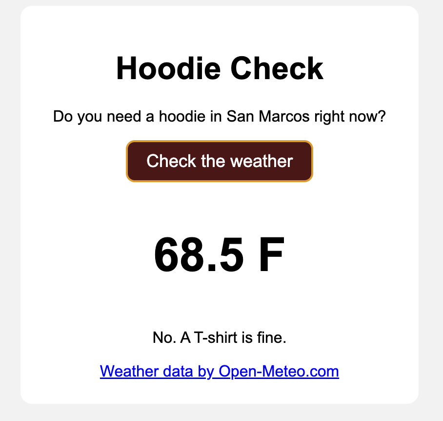
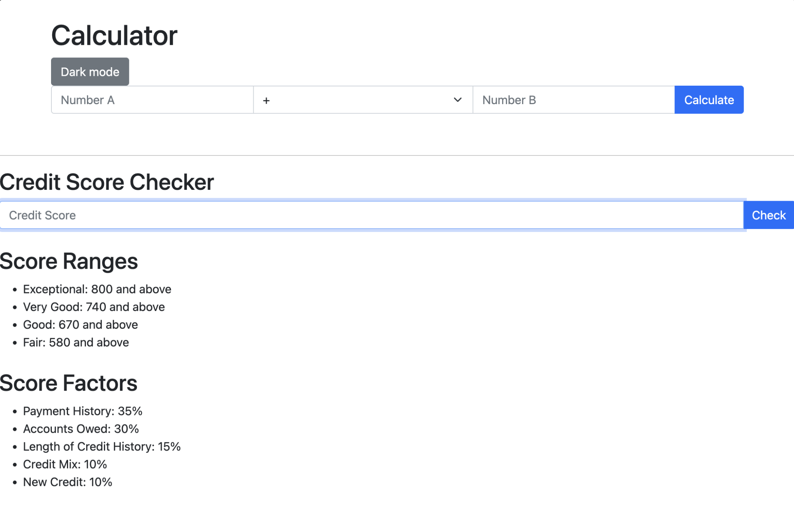
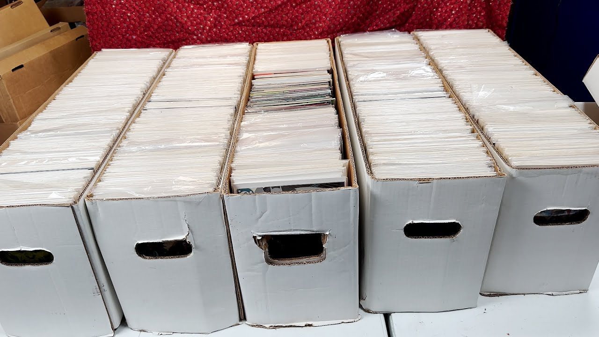

I am Tristan Hoang, a student at Texas State University pursuing a degree in CIS. During my leisure time, my biggest hobby includes collecting comic books from various publishers, whether it's DC, Marvel, or independent publishers.
Creating this website allows me to share my passion with the greater world and cultivate a community of like-minded readers.
About Me
Hobby
Collecting vintage and modern comic books.
Major
CIS student at Texas State University.
Goal
Build responsive, accessible web applications.
My Favorite Comic Series
My Projects
Projects Showcase
Here are three projects I have built:
Weather App

This interactive web page helps users instantly check the weather in their location. It also is connected to the user's current location.
View CodeCredit Score Page

This project displays credit score ranges and factors in a clear, accessible layout. It also provides personalized recommendations based on the user's credit history.
View CodeComic Collection Page

| Series | Publisher | Year |
|---|---|---|
| Batman | DC | 1939 |
| Spawn | Image | 1992 |